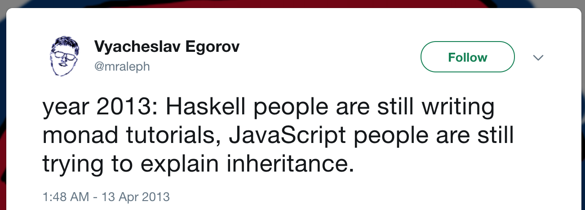
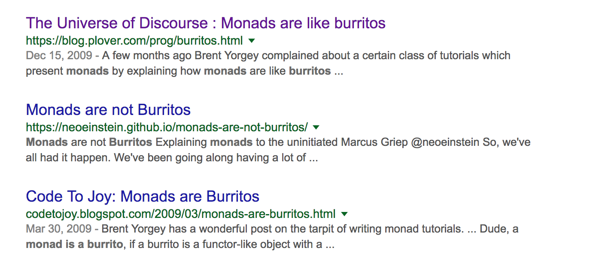

Monads in Ruby
By Victor Zagorodny
Email: post.vittorius@gmail.com
Twitter: https://twitter.com/vittoriuz
Github: https://github.com/vittorius

Monads: what is it?

A monad is a monoid in the category of endofunctors, what's the problem?
Monads: what is it?
Monads:
why?